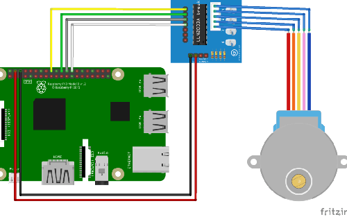
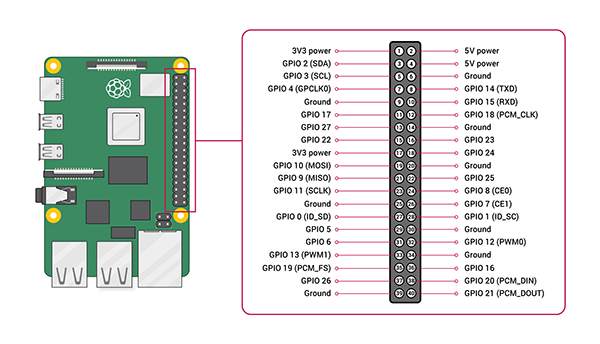

Collegamento del Driver al Raspberry
Partendo da questo schema:

Si prega di collegare nel seguente modo i Pin da In1 a In4:
-Pin In 1 sul GPIO23
-Pin In 2 sul GPIO24
-Pin In 3 sul GPIO17
-Pin In 4 sul GPIO27
Si consiglia altresì di collegare una alimentazione diretta al driver e non passare dal Raspberry.
Si allega schema Gpio del Raspberry
